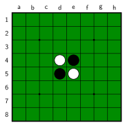

オセロ（リバーシ）を下の初期配置から始める。黒が先手。どちらも石を置けなくなったら対局は終わる。対局が終わるまでに、最短で何手かかるか。
An Othello (Reversi) game starts from the position below, with Black to move first. The game ends when neither player can place a disc. What is the fewest number of moves in which a game can end?

9 手（黒 13・白 0 で黒の勝ち）
9 手目で白の石が盤からなくなり、どちらも置けなくなります。手順の一例: f5 f6 f7 f4 f3 e3 d3 g7 h8
9 moves. Black wins 13–0: after the 9th move no white discs remain, so neither player can move.